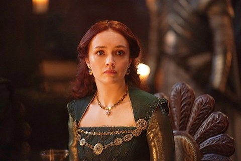

Alicent Hightower
Interpreta as palavras finais de Viserys como um desejo de coroar seu filho Aegon.
Conteúdo até a temporada 1, episódio 10.
Ver Mapa de Conexões →Temporada 1
Acompanhe os acontecimentos registrados até o episódio escolhido.
Episódio 01 — The Heirs of the Dragon
Filha de Otto e amiga próxima de Rhaenyra. Aproxima-se do rei viúvo por incentivo do pai.
Episódio 02 — The Rogue Prince
Viserys anuncia seu casamento com Alicent. A escolha abala a amizade dela com Rhaenyra.
Episódio 03 — Second of His Name
Rainha e mãe de Aegon, vê crescer a pressão para que o filho seja declarado herdeiro.
Episódio 04 — King of the Narrow Sea
Otto relata a presença de Rhaenyra e Daemon na casa de prazer. Alicent interroga a amiga, que nega ter se deitado com o tio.
Episódio 05 — We Light the Way
Adota o verde dos Hightower na celebração do casamento e se distancia politicamente de Rhaenyra.
Episódio 06 — The Princess and the Queen
Rhaenyra acaba de dar à luz Joffrey quando Alicent exige ver a criança. Os traços dos filhos da princesa alimentam suspeitas sobre Harwin Strong.
Episódio 07 — Driftmark
Alicent exige reparação pela mutilação do filho. Tenta atingir Lucerys com a adaga de Viserys e fere o braço de Rhaenyra durante o confronto.
Episódio 08 — The Lord of the Tides
Interpreta as palavras finais de Viserys como um desejo de coroar seu filho Aegon.
Episódio 09 — The Green Council
Alicent anuncia o que acredita ser a vontade de Viserys. Descobre que parte do conselho já planejava coroar Aegon. Criston mata Lorde Beesbury quando ele protesta.
Personagens relacionados
- Otto HightowerFilha e pai
- Rhaenyra TargaryenAmigas de infância
- Viserys I TargaryenCasamento anunciado
- Aegon TargaryenMãe e filho
- Criston ColeConfissão e proteção
- Larys StrongInformações e favores
- Aemond TargaryenMãe e descendente
- Helaena TargaryenMãe e descendente